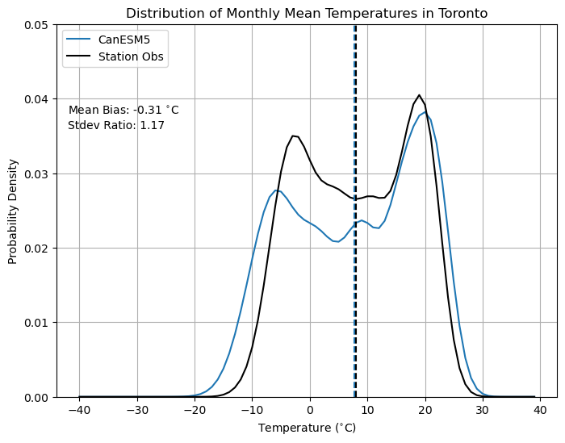
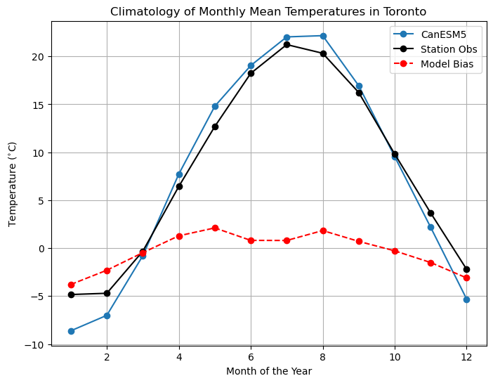

5.3 Exploratory Data Analysis#
Once you have selected the observational and model datasets to use for your analysis, you can begin doing some exploratory data analysis, which will inform how you choose to downscale the model data. This involves much of the analysis demonstrated in Chapter 3, but the most crucial steps for the workflow are explained in this section. If you’re new to analysing climate data and don’t have much intutition for the typical characteristics of different variables, it’s very important that you explore your data extensively by making plots of time series and probability distributions, and calculating important quantities, such as climatologies and extreme values.
5.3.1 Check Model/Obs Consistency#
As demonstrated in Section 3.4, climate models are not perfect representation of the real physical climate system. Model output contains systematic errors that we call biases that downscaling and bias adjustment models aim to account for. In section 3.4 and, to some extent, section 4.4, we demonstrated how to quantify model biases. In partcular, 3.4 compared the probability density functions of Toronto monthly mean temperatures between one member of the CanESM5 historical ensemble, and observations from a weather station. Comparing the PDFs of a quantity at a particular location is useful for getting a sense of the severity and character of the model biases. This will be important for choosing an appropriate downscaling or bias-correction method (section 5.4.1).
 |
|---|
PDFs of Toronto Monthly Mean Temperature, from Section 3.4 |
We also compared the monthly climatologies of monthly mean temperature in Toronto, as well as the month-by-month mean bias of the model. The overall mean bias is small, but the mean bias for individual months of the year are all much larger. Since the mean bias is typically positive in the summer months and negative in the winter months, the effct averages out over the whole year, but the biases at smaller time scales will have important effects on your analysis. Understanding the seasonality of biases is also important when selecting your bias correction and/or downscaling methods. When biases vary seasonally like they do in this example, you’ll want to apply adjustments that vary seasonally, to match the model to the observed climatology. When the biases do not show evidence of a systematic seasonal cycle, it’s better to use as much data as possible to characterize the whole distribution of values.
 |
|---|
Monthly Climatologies of Toronto Monthly Mean Temperature, from Section 3.4 |
Assessing model biases goes beyond comparing PDFs and climatological means. Depending on your application, you may also wish to quantify biases in extreme values of your variables/quantities of interest, and also possibly temporal and spatial autocorrelations, as demonstrated in Section 4.4. The same methods used therein, for validating downscaled model output, can be applied for validating raw model ouput. It can also be informative to calculate your climate indicator(s) or run your impact model using the raw model data, and compare to results calculated with observations, since sometimes biases in your indicator or impact model cannot be easily deduced from the biases in the input variables, especially for complex impact models that take many inputs. This is not possible if your impact model only takes high-resoluton gridded input data, since of course the raw model output has coarse spatial resolution, but can be done easily if you are interested in a simple indicator like Cooling Degree Days.
5.3.2 Evaluate Climate Change Signal#
Sections 3.4.5 and 4.5 discussed investigation of projected changes of climate variables in raw and downscaled GCM data, respectively. As mentioned in 3.4.5, it’s important to have an idea of the sign, magnitude, and statistical significance of the projected changes to your variables of interest (and possibly your climate indicator), before doing downscaling and proceeding further into your study. The univariate downscaling and/or bias correction methods covered in Chapter 4 are designed to reduce model biases and enhance spatial resolution, but cannot substantially change the nature of the climate change signal produced in the unadjusted model output. If the raw model projects no significant change, the same will almost certainly be true in the downscaled projections. Additionally, combining information about the projected changes to the input variables with knowledge about the sensitivites of your climate indicator/impact model to its inputs allows you to interpret and explain your end results.
Sections 2.3 and 5.2 discussed the different sources of uncertainty in climate change projections, and how to select your datasets to best characterize the effect of these sources of uncertainty on the range of projections. Having an idea of these uncertainty ranges in the raw model data will be helpful for interpreting your final results.